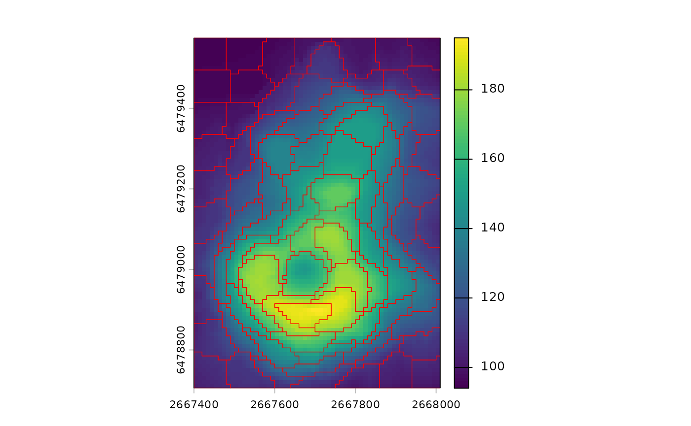
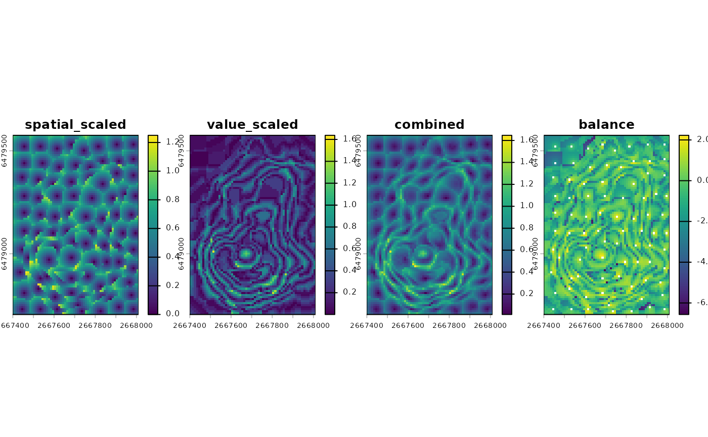

Introduction to supercells
Jakub Nowosad
2026-02-06
Source:vignettes/articles/v2-intro.Rmd
v2-intro.RmdThe supercells package creates compact, homogeneous regions from raster data. It replaces thousands or millions of pixels with a smaller number of meaningful spatial units. This helps with interpretation, visualization, and downstream modeling. It also reduces noise while preserving important spatial structure.
The package is designed to work with rasters that have many layers or time steps. It supports multiple distance measures such as Jensen–Shannon divergence or dynamic time warping, as well as user-defined distance functions, so similarity can be adapted to the data. It can therefore handle diverse data types and high-dimensional inputs without changing the main workflow. The package core ideas are described in Nowosad and Stepinski (2022).
Core functions
The main function in the package is sc_slic(). It
implements a SLIC-style algorithm that balances spatial compactness with
value similarity (Achanta et al. 2012) and
extends it to work with multi-layer rasters and custom distance
functions. The output is a set of polygon supercells stored as an
sf object. This object can include centers, average values,
and IDs depending on the requested outcomes. In practice,
sc_slic() is the entry point for most workflows.
The key tuning arguments in sc_slic() are
step and compactness. step sets
the spacing of initial centers and controls the expected number of
supercells. It can be thought of as the expected spatial scale of the
output. compactness controls the tradeoff between spatial
regularity and value similarity. Lower values prioritize value
similarity and may lead to irregular shapes, while higher values
prioritize shape regularity – supercells may look more like squares –
but may be less homogeneous in terms of values.
For compactness selection, you may use
sc_tune_compactness() to estimate a good value from a short
pilot run. Alternatively, the "auto" option for
compactness enables SLIC0-style adaptive compactness when
you want the algorithm to adjust locally – this does not require setting
a specific value, but also takes away direct control.
To assess quality of the resulting supercells, use
sc_metrics_pixels() for pixel-level distances,
sc_metrics_supercells() for per-supercell summaries, and
sc_metrics_global() for a general overview. These metrics
help compare different parameter settings or input preprocessing
choices.
Minimal example
The goal of this example is to derive supercells from a raster and
visualize them. For that purpose, we will use the built-in
volcano dataset, which is a small raster of elevation
values.
library(supercells)
library(terra)
vol <- terra::rast(system.file("raster/volcano.tif", package = "supercells"))This raster has 5307 cells – a small number for demonstration, but the same workflow applies to much larger rasters as well. Moreover, it has only one layer – but the same functions can handle multi-layer rasters with any number of layers.
Below, we create supercells in three different formats: polygons,
points, and raster IDs. The polygon supercells are the most common
output. Here, we specified step = 8 which would result in
supercells of approximately 8x8 cells in size if they were perfectly
regular, but the actual shapes and sizes will depend on the data and the
compactness setting. The compactness is set to
1 – the behavior of this parameter depends on many factors,
including the range of values in the raster, their properties, and the
selected distance measure.
# Polygon supercells (sf)
vol_sc <- sc_slic(
vol,
step = 8,
compactness = 1
)
terra::plot(vol)
plot(sf::st_geometry(vol_sc), add = TRUE, lwd = 0.6, border = "red")
The resulting sf object contains one row per supercell.
Each row stores summary values of each layer in the original raster, as
well as the geometry of the supercell. By default only summary values
are returned, so use
outcomes = c("supercells", "coordinates", "values") when
you also want IDs and center coordinates.
Two related functions provide alternative output formats. Use
sc_slic_points() to return only supercell centers as
points. Use sc_slic_raster() to return a raster of
supercell IDs for large datasets or raster-based pipelines. These
functions share the same core arguments and can be swapped with minimal
changes.
Now, let’s try to tune the compactness parameter using a
pilot run.
tune <- sc_tune_compactness(
vol,
step = 8,
metrics = "local"
)
tune
#> step metric compactness
#> 1 8 local 9.084872Next, we may try to create supercells with the suggested
compactness value.
vol_sc_tuned <- sc_slic(
vol,
step = 8,
compactness = tune$compactness
)
terra::plot(vol)
plot(sf::st_geometry(vol_sc_tuned), add = TRUE, lwd = 0.6, border = "red")
Such a derived compactness value may serve as a good starting point for further experimentation.
Afterwards, we can evaluate the quality of the resulting supercells using metrics on different levels.
pixel_metrics <- sc_metrics_pixels(vol, vol_sc_tuned)
supercell_metrics <- sc_metrics_supercells(vol, vol_sc_tuned)
global_metrics <- sc_metrics_global(vol, vol_sc_tuned)The pixel-level metrics show how well the supercells represent the
original raster values at the pixel level. By default they include
spatial, value, combined, and
balance. When scale = TRUE (the default), the
spatial and value layers are returned as spatial_scaled and
value_scaled.
plot(pixel_metrics, nr = 1)
These maps help diagnose where spatial or value coherence is weak. For example, large patches of high values can indicate areas where the chosen parameters may be too coarse for local variation.
The supercell-level metrics summarize each polygon as a single value. These are helpful when you want to compare supercells or join metrics to attributes.
plot(supercell_metrics)
The global metrics provide a single-row summary of overall quality.
They are useful for comparing parameter settings across multiple runs,
such as a small grid of step and compactness
values.
global_metrics
#> step compactness n_supercells mean_spatial_dist_scaled mean_value_dist_scaled
#> 1 8 9.084872 88 0.4546412 0.3061439
#> mean_combined_dist balance
#> 1 0.5915118 -0.4036551